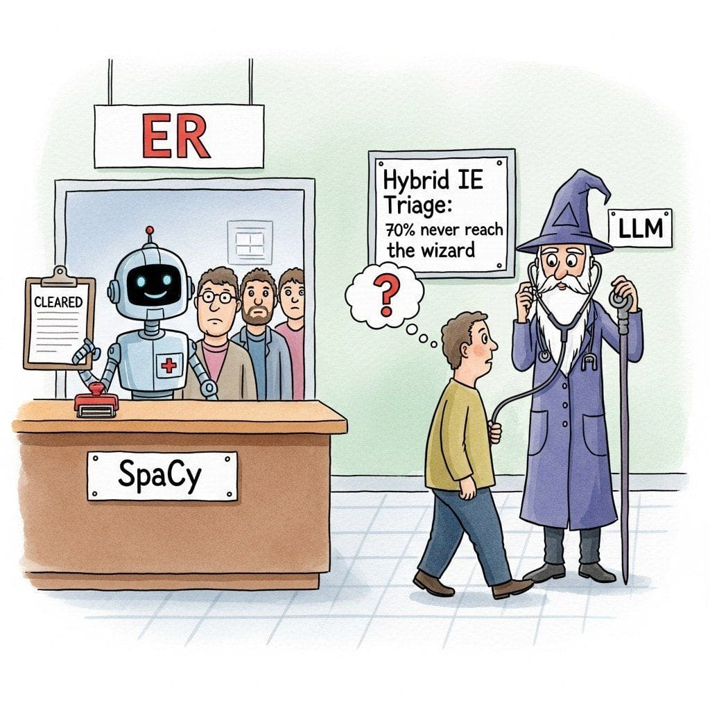

"Layer one is the triage nurse; layer two is the specialist. Seventy percent of patients never reach the specialist, and that is the whole point of the hospital."
Pip, Pipeline-Composing AI Agent
34.3.1 Hybrid IE Architectures
Hybrid extraction pipelines exist because pure-LLM systems cost too much and pure-classical systems break too often. The economics are blunt: a $0.02 LLM call applied to 10,000 documents per day costs $6,000 per month, while the same volume routed through spaCy plus an LLM only when confidence is low costs $300 and a fraction of a data scientist.
In a production document processing system, you might need to extract entities from 10,000 documents per day. Running every document through an LLM at $0.02 per document costs $200/day ($6,000/month). But if spaCy handles 70% of documents correctly (those with standard entities and clean text), you only need the LLM for the remaining 30%, dropping the cost to $60/day. More importantly, the classical pipeline returns results in milliseconds, keeping your median latency low. The structured output techniques from Section 11.2 (Pydantic models, Instructor) ensure that the LLM's extraction results are parsed reliably, while spaCy's span-based output is deterministic by design.
Prerequisites
This section assumes the classical IE methods from Section 34.2, the LLM tool-use and structured-output patterns from Section 15.6, and the function-calling vocabulary from Section 26.3.
The most effective production IE systems combine classical and LLM-based extraction in a layered architecture. Classical models handle the high-volume, well-defined entity types (persons, organizations, dates, locations) at near-zero cost, while LLMs are called selectively for complex, domain-specific extraction tasks that require reasoning or world knowledge. Figure 34.3.2 illustrates this layered hybrid approach. Code Fragment 34.3.10 shows this approach in practice.

Preconditions. A high-volume document stream (thousands to millions of documents per day), a small set of "standard" entity types that classical NER handles well (PERSON, ORG, DATE, GPE, MONEY), and a separate set of "domain" entity types or relations that genuinely require LLM reasoning (medical conditions, legal clauses, financial instruments, implicit relations).
Architecture. Layer 1 always runs classical NER (spaCy) on every document at near-zero marginal cost. A complexity router then inspects the document for domain signals (keyword presence, classical-NER coverage gaps, document length, source type). If no domain signal is present, the pipeline returns the classical entities alone. If a domain signal is detected, Layer 2 invokes the LLM with the classical entities already in context, asking it to add only the entities and relations Layer 1 missed.
Tradeoffs. Pro: 60-80% of documents resolve at Layer 1, dropping aggregate LLM cost by the same factor and keeping median latency in the sub-millisecond range. Con: the complexity router is a heuristic and will sometimes route documents incorrectly; investment in router quality (regex + classifier + lightweight LLM gate) compounds over millions of documents. Pair with grounding verification (Section 34.4) so Layer 2 outputs are span-checked before merging.
34.3.1.1 Building the Hybrid Pipeline
The following implementation (Code Fragment 0) shows this approach in practice.
Code Fragment 34.3.10 illustrates a chat completion call.
# Combine spaCy NER with LLM extraction in a two-layer pipeline
# The LLM handles domain-specific entities that spaCy cannot recognize
import spacy
from pydantic import BaseModel, Field
from typing import Optional
from dataclasses import dataclass
# Assume 'client' is an Instructor-patched OpenAI client
# client = instructor.from_openai(OpenAI())
nlp = spacy.load("en_core_web_trf")
class DomainEntity(BaseModel):
text: str
entity_type: str
source: str = Field(description="'classical' or 'llm'")
confidence: float
class RelationTriple(BaseModel):
subject: str
predicate: str
object: str
class HybridExtractionResult(BaseModel):
entities: list[DomainEntity]
relations: list[RelationTriple]
# Mapping from spaCy labels to our unified schema
SPACY_LABEL_MAP = {
"PERSON": "person", "ORG": "organization",
"GPE": "location", "LOC": "location",
"DATE": "date", "MONEY": "money",
"PRODUCT": "product",
}
# Domain-specific types that require LLM extraction
DOMAIN_TYPES = {"medical_condition", "legal_clause", "financial_instrument"}
def needs_llm_extraction(text: str, classical_entities: list) -> bool:
"""Decide whether to invoke the LLM for deeper extraction."""
# Heuristic: call LLM if the document contains domain keywords
# that classical NER cannot handle
domain_keywords = [
"diagnosis", "plaintiff", "defendant", "derivative",
"ct scan", "mri", "statute", "breach of contract",
]
text_lower = text.lower()
return any(kw in text_lower for kw in domain_keywords)
def extract_classical(text: str) -> list[DomainEntity]:
"""Fast, cheap extraction using spaCy."""
doc = nlp(text)
entities = []
for ent in doc.ents:
if ent.label_ in SPACY_LABEL_MAP:
entities.append(DomainEntity(
text=ent.text,
entity_type=SPACY_LABEL_MAP[ent.label_],
source="classical",
confidence=0.95,
))
return entities
def extract_with_llm(text: str, existing: list[DomainEntity]) -> HybridExtractionResult:
"""LLM extraction for domain-specific types and relations."""
existing_summary = ", ".join(f"{e.text} ({e.entity_type})" for e in existing)
return client.chat.completions.create(
model="gpt-4o",
response_model=HybridExtractionResult,
messages=[
{"role": "system", "content": (
"Extract domain-specific entities and relations from the text. "
f"These entities were already found by NER: {existing_summary}. "
"Focus on entities and relations NOT already captured. "
"Mark all entities with source='llm'."
)},
{"role": "user", "content": text},
],
max_retries=2,
)
def hybrid_extract(text: str) -> HybridExtractionResult:
"""Two-layer hybrid extraction pipeline."""
# Layer 1: Classical NER (always runs, near-zero cost)
classical = extract_classical(text)
# Layer 2: LLM extraction (conditional, only when needed)
if needs_llm_extraction(text, classical):
llm_result = extract_with_llm(text, classical)
# Merge: classical entities + LLM entities + LLM relations
all_entities = classical + llm_result.entities
return HybridExtractionResult(
entities=all_entities,
relations=llm_result.relations,
)
# Simple case: return classical entities only
return HybridExtractionResult(entities=classical, relations=[])
# Example usage
text = """
Dr. Sarah Chen at Massachusetts General Hospital diagnosed the patient
with Stage II non-small cell lung cancer based on the CT scan results
from January 15, 2025. Treatment with pembrolizumab was initiated.
"""
result = hybrid_extract(text)
print(f"Entities ({len(result.entities)}):")
for e in result.entities:
print(f" [{e.source:9s}] {e.entity_type:20s}: {e.text}")
print(f"\nRelations ({len(result.relations)}):")
for r in result.relations:
print(f" {r.subject} -> {r.predicate} -> {r.object}")When you self-host the LLM in the hybrid pipeline above, switch the LLM call from instructor (validation-after-the-fact) to outlines (constraint-during-decoding). outlines compiles a Pydantic schema or regex into a finite-state machine that masks invalid tokens at every generation step, so the model literally cannot emit malformed JSON. This eliminates retry loops and is the canonical choice when you control the inference engine (vLLM, Transformers, llama-cpp).
Show code
pip install outlines
import outlines
from pydantic import BaseModel
class DomainEntity(BaseModel):
text: str
entity_type: str
def build_extractor(checkpoint: str):
"""Compile the Pydantic schema into a token-masked FSM generator."""
model = outlines.models.transformers(checkpoint)
return outlines.generate.json(model, DomainEntity)
generator = build_extractor("meta-llama/Llama-3.1-8B-Instruct")
entity = generator("Extract: pembrolizumab was prescribed.")
print(entity.model_dump_json(indent=2))outlines guarantees schema-valid output on the very first sample, removing the max_retries parameter from the previous Instructor call.The hybrid architecture delivers large cost savings because the complexity router filters out 60-80% of documents at the classical layer. Only documents that contain domain-specific signals (medical terms, legal language, financial instruments) trigger the more expensive LLM call. For a pipeline processing 100K documents/day, this means the LLM handles only 20-40K documents, reducing API costs by 60-80% compared to an LLM-only approach.
Take a pipeline processing 100,000 documents/day at $0.02 per LLM call. LLM-only baseline: 100,000 × $0.02 = $2,000/day (~$60K/month). Hybrid with 70% classical filter rate: only 30,000 documents reach the LLM, so cost = 30,000 × $0.02 = $600/day, a 70% reduction ($1,400/day saved, ~$42K/month). Hybrid with 80% classical filter rate: 20,000 LLM-bound documents × $0.02 = $400/day, an 80% reduction (~$48K/month saved). The classical layer adds essentially zero variable cost (spaCy on CPU is fractions of a cent per document), so the savings come almost entirely from suppressed LLM calls. The break-even rule: the complexity router pays for itself the moment it suppresses one LLM call.
Build a complexity router that classifies 100 mixed documents (50 boilerplate invoices + 50 contracts) into "classical-only" or "send-to-LLM". Use spaCy NER counts and a regex match for legal terms ("hereby", "whereas", "indemnify") as features. Measure the classical-pass rate and the false-negative rate (a complex contract incorrectly routed to classical-only).
Answer Sketch
A reasonable rule: route to classical if (NER entity count < 8 AND no legal-term match). Expected pass rate on this 50/50 mix is around 45 to 55%, with false-negative rate ideally under 5%. Tune the entity threshold and term list to push false-negatives toward zero (you would rather pay for one extra LLM call than miss a clause in a real contract). Target metric: 60 to 80% classical pass rate matches the numeric example in this section.
Identify two document distributions where the hybrid IE architecture in this section produces a worse cost or accuracy profile than an LLM-only pipeline. Justify each.
Answer Sketch
(1) High-variance documents with no detectable "simple" cluster, e.g., free-form clinical notes where every doc contains medical terms; the router never filters, so the system pays classical-NER cost on top of LLM cost and is strictly worse. (2) Adversarial or out-of-distribution inputs where the classical NER mislabels and silently produces wrong structured output that is never sent to the LLM for verification, e.g., a contract that uses unusual phrasing for indemnification. Mitigation: add LLM verification on a sample of "easy" classical outputs.
What's Next?
In the next section, Section 34.4: Production IE Deployment Patterns, we build on the material covered here.